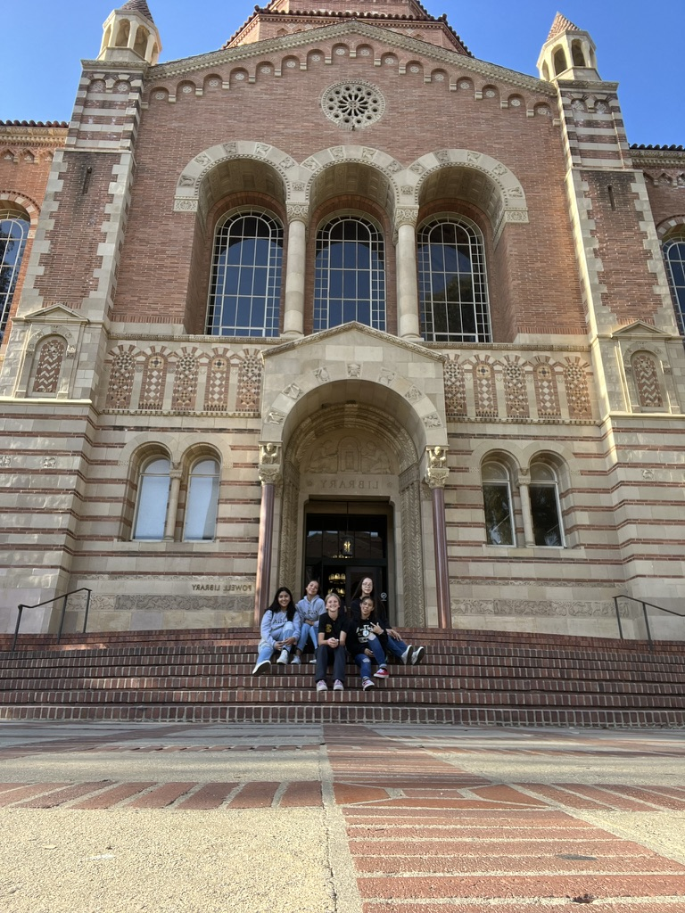
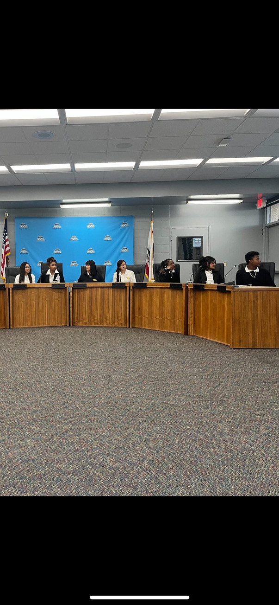
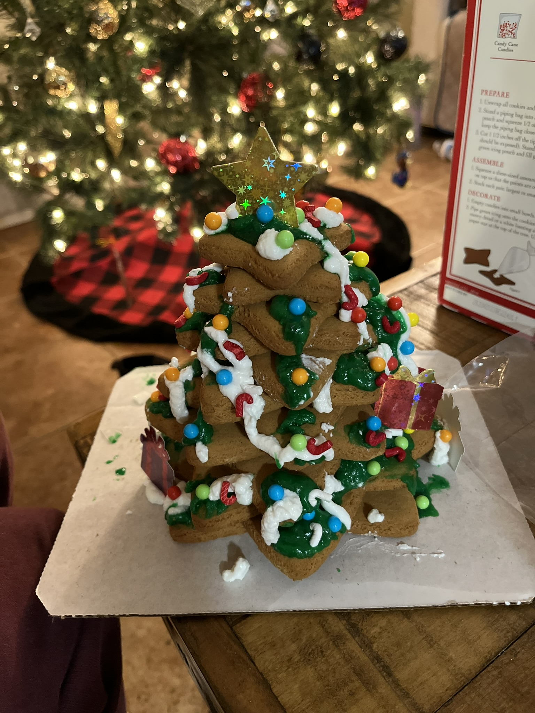

Melinda Pineda
My journey into the field of Psychology began with a profound curiosity about human behavior and the underlying mental processes that drive our daily interactions. Currently pursuing my degree in Riverside, California, I have dedicated my academic career to understanding the complexities of the human mind. My coursework has provided me with a robust foundation in developmental psychology, cognitive processes, and social behavior. I am particularly drawn to how environmental factors in diverse communities—like those found in the Inland Empire—shape individual resilience and mental health outcomes. This academic path isn't just about earning a degree for me; it's about developing the analytical tools necessary to advocate for mental wellness and to support individuals in navigating life's psychological challenges.
Beyond the classroom, I have focused on developing a versatile professional skillset that bridges the gap between psychological theory and real-world application. My experience involves honing critical thinking, active listening, and empathetic communication—skills that are vital for any professional in the human services sector. I have spent time analyzing various research methodologies and familiarizing myself with data interpretation, which allows me to approach problems with a scientific lens. Whether I am collaborating on group projects or engaging in community volunteer work, I prioritize understanding the unique perspectives of others. My goal is to apply these interpersonal strengths in a professional environment where data-driven insights and human compassion go hand-in-hand to improve organizational or individual well-being.
Looking toward the future, I aspire to utilize my background in Psychology to make a tangible impact in the field of mental health or organizational behavior. I am deeply committed to lifelong learning and stay updated on the latest psychological research and therapeutic trends. My ultimate goal is to contribute to a forward-thinking organization where I can apply my knowledge of behavioral science to foster healthier, more productive environments. I believe that by focusing on mental health advocacy and accessible resources, we can significantly improve the quality of life for diverse populations. I am excited to bring my dedication, academic rigor, and passion for helping others to a professional role that challenges me to grow while making a positive difference in the community.
Experience
Peer Mentor
• Helped students advance in their education
• Mentor grades 2nd through 6th
• Prior experience included
Team Member at Arbys
• Responsible for checking out customers
• Providng excellent customer service
Student Mentor
• Ran sessions to help students learn
• Reviewed and graded student coding assignments
• Created educational content to help student education
• TA'd for students each academic quarter
Education
UC Riverside
Portfolio



